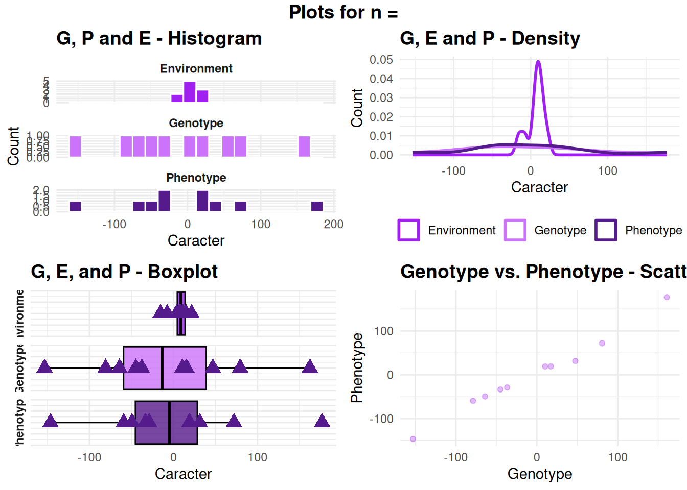
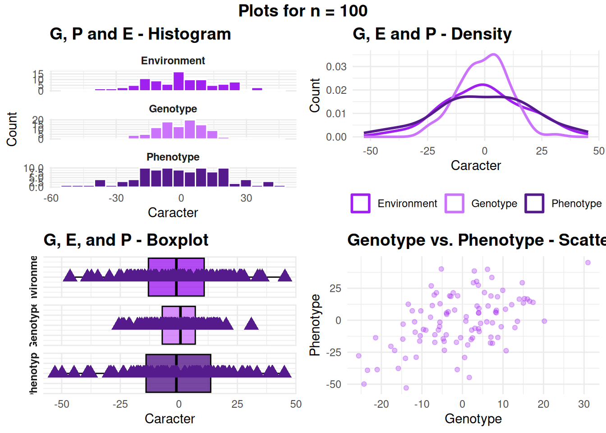
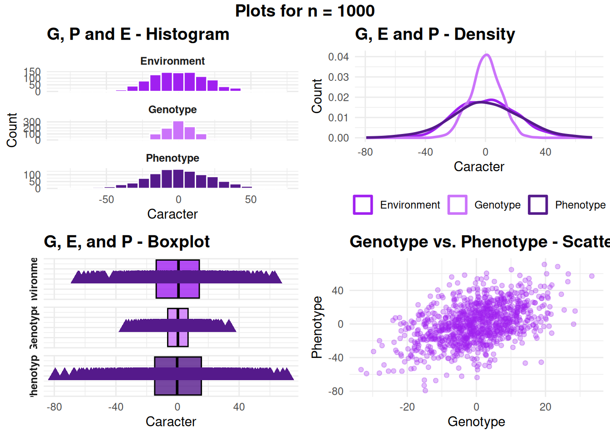
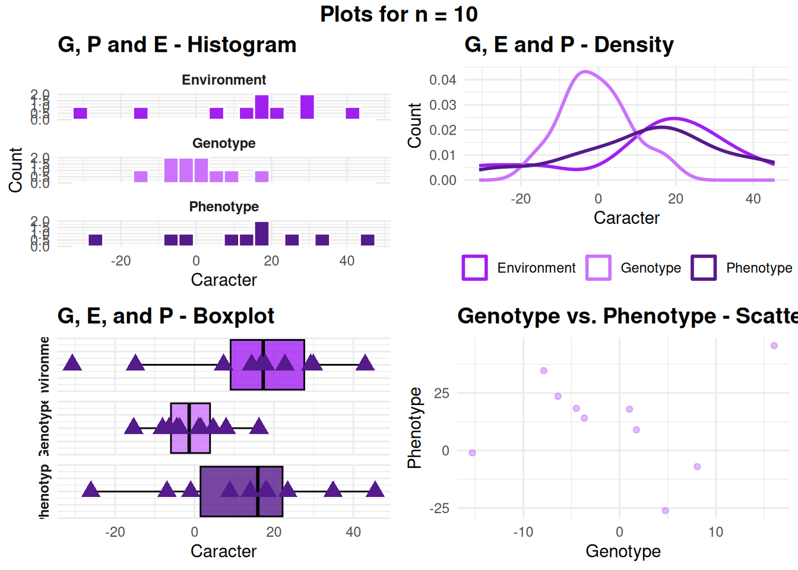

pkg = c("tidyverse", "readxl", "gridExtra", "ggbeeswarm", "grid", "ggtext", "cowplot")
sapply(pkg, require, character.only=TRUE) tidyverse readxl gridExtra ggbeeswarm grid ggtext cowplot
TRUE TRUE TRUE TRUE TRUE TRUE TRUE set.seed(11480230)
## Amostra = 10
Genotype <- rnorm(n = 10, mean = 0, sd = 100)
Environment <- rnorm(n = 10, mean = 0, sd = 10)
Phenotype <- Genotype + Environment
df <- data.frame(Genotype, Environment, Phenotype); df Genotype Environment Phenotype
1 162.28036 14.628912 176.90927
2 79.38309 -7.443797 71.93930
3 -44.83682 11.377825 -33.45899
4 -80.71276 21.478813 -59.23395
5 10.62461 8.382049 19.00666
6 -37.77203 8.904502 -28.86753
7 15.50627 3.652182 19.15845
8 46.84213 -15.393468 31.44866
9 -64.26859 14.942174 -49.32642
10 -153.43916 7.190858 -146.24831### Histogram
p1 <- df |>
# Transforming to longer format
pivot_longer(cols = c(Genotype, Environment, Phenotype),
names_to = "origem",
values_to = "Caracter") |>
# Creating the graphic
ggplot(aes(x = Caracter, fill = origem)) +
geom_histogram(bins = 20, color = 'white', show.legend = FALSE) +
# Faceting
facet_wrap(~ origem, ncol = 1, scales = "free_y") +
# Design
scale_fill_manual(values = c("Genotype" = "#cb73fa",
"Environment" = "purple",
"Phenotype" = "purple4")) +
labs(x = "Caracter",
y = "Count",
title = "G, P and E - Histogram") +
theme_minimal() +
theme(plot.title = element_text(size = 14, face = "bold"),
strip.text = element_text(face = "bold"))
### Density
p2 <- df |>
# Transforming to longer format
pivot_longer(cols = c(Genotype, Environment, Phenotype),
names_to = "origem",
values_to = "Caracter") |>
# Creating graphic
ggplot(aes(x = Caracter, color = origem)) +
geom_density(linewidth = 1) +
# Design
scale_color_manual(values = c("Genotype" = "#cb73fa",
"Environment" = "purple",
"Phenotype" = "purple4")) +
labs(x = "Caracter",
y = "Count",
title = "G, E and P - Density",
color = "Origem") +
theme_minimal() +
theme(legend.position = "bottom",
legend.title = element_blank(),
plot.title = element_text(face = "bold", size = 14))
### Boxplot
p3 <- df |>
# 1. Formato longo para g, e, p
pivot_longer(cols = c(Genotype, Environment, Phenotype),
names_to = "origem",
values_to = "Caracter") |>
# 2. Início do Plot
ggplot(aes(x = Caracter, y = 1, fill = origem)) +
# Boxplot horizontal
geom_boxplot(color = "black", alpha = 0.8, show.legend = FALSE) +
# 3. Substituir o annotate por stat_summary para calcular a média por facet
stat_summary(fun = mean, geom = "point", shape = 17, size = 4, color = "purple4") +
# 4. Facets: uma linha para cada origem
facet_wrap(~ origem, ncol = 1, strip.position = "left") +
# Estética
scale_fill_manual(values = c("Genotype" = "#cb73fa",
"Environment" = "purple",
"Phenotype" = "purple4")) +
labs(x = "Caracter",
y = NULL,
title = "G, E, and P - Boxplot") +
theme_minimal() +
theme(legend.position = "none",
legend.title = element_blank(),
plot.title = element_text(size = 14, face = "bold"),
axis.text.y = element_blank(),
axis.ticks.y = element_blank(),
strip.text = element_text(face = "bold"))
### Scatterplot GxP
p4 <- df |> ggplot(aes(x = Genotype, y = Phenotype)) +
geom_jitter(alpha = .3, color = "purple") +
labs(x = "Genotype",
y = "Phenotype",
title = "Genotype vs. Phenotype - Scatterplot") +
theme_minimal() +
theme(plot.title = element_text(size = 14, face = "bold"))
# Grid
grid.arrange(p1, p2, p3, p4,
ncol = 2,
top = grid::textGrob("Plots for n =",
gp = grid::gpar(fontsize = 14, fontface = "bold")))
# Transforming in a function
samples_dif <- function(n1, n2, n3) {
set.seed(11480230) # Setting seed
sample_sizes <- c(n1, n2, n3) # Receive the sample sizes
results <- list() # Store results
plots <- list() # Store plots
for (i in seq_along(sample_sizes)) {
n <- sample_sizes[i]
# Generating the data
Genotype <- rnorm(n = n, mean = 0, sd = 10)
Environment <- rnorm(n = n, mean = 0, sd = 20)
Phenotype <- Genotype + Environment
df <- data.frame(Genotype, Environment, Phenotype)
results[[i]] <- df
# Plots
### Histogram
p1 <- df |>
pivot_longer(cols = c(Genotype, Environment, Phenotype),
names_to = "origem",
values_to = "Caracter") |>
ggplot(aes(x = Caracter, fill = origem)) +
geom_histogram(bins = 20, color = 'white', show.legend = FALSE) +
facet_wrap(~ origem, ncol = 1, scales = "free_y") +
scale_fill_manual(values = c("Genotype" = "#cb73fa",
"Environment" = "purple",
"Phenotype" = "purple4")) +
labs(x = "Caracter",
y = "Count",
title = "G, P and E - Histogram") +
theme_minimal() +
theme(plot.title = element_text(size = 14, face = "bold"),
strip.text = element_text(face = "bold"))
### Density
p2 <- df |>
pivot_longer(cols = c(Genotype, Environment, Phenotype),
names_to = "origem",
values_to = "Caracter") |>
ggplot(aes(x = Caracter, color = origem)) +
geom_density(linewidth = 1) +
scale_color_manual(values = c("Genotype" = "#cb73fa",
"Environment" = "purple",
"Phenotype" = "purple4")) +
labs(x = "Caracter",
y = "Count",
title = "G, E and P - Density",
color = "Origem") +
theme_minimal() +
theme(legend.position = "bottom",
legend.title = element_blank(),
plot.title = element_text(face = "bold", size = 14))
### Boxplot
p3 <- df |>
pivot_longer(cols = c(Genotype, Environment, Phenotype),
names_to = "origem",
values_to = "Caracter") |>
ggplot(aes(x = Caracter, y = 1, fill = origem)) +
geom_boxplot(color = "black", alpha = 0.8, show.legend = FALSE) +
stat_summary(fun = mean, geom = "point", shape = 17, size = 4, color = "purple4") +
facet_wrap(~ origem, ncol = 1, strip.position = "left") +
scale_fill_manual(values = c("Genotype" = "#cb73fa",
"Environment" = "purple",
"Phenotype" = "purple4")) +
labs(x = "Caracter",
y = "",
title = "G, E, and P - Boxplot") +
theme_minimal() +
theme(legend.position = "none",
legend.title = element_blank(),
plot.title = element_text(size = 14, face = "bold"),
axis.text.y = element_blank(),
axis.ticks.y = element_blank(),
strip.text = element_text(face = "bold"))
### Scatterplot GxP
p4 <- df |> ggplot(aes(x = Genotype, y = Phenotype)) +
geom_jitter(alpha = .3, color = "purple") +
labs(x = "Genotype",
y = "Phenotype",
title = "Genotype vs. Phenotype - Scatterplot") +
theme_minimal() +
theme(plot.title = element_text(size = 14, face = "bold"))
# 2. Criar o Grid para esta amostra n
grid_n <- grid.arrange(p1, p2, p3, p4,
ncol = 2,
top = grid::textGrob(paste("Plots for n =", n),
gp = grid::gpar(fontsize = 14, fontface = "bold")))
plots[[i]] <- grid_n
}
# 3. Tabela Resumo (sample_summary)
sample_summary <- data.frame(
"Sample_Size" = sample_sizes,
"Genotypic_Mean" = sapply(results, function(x) mean(x$Genotype)),
"Genotypic_Var" = sapply(results, function(x) var(x$Genotype)),
"Env_Mean" = sapply(results, function(x) mean(x$Environment)),
"Env_Var" = sapply(results, function(x) var(x$Environment)),
"Pheno_Mean" = sapply(results, function(x) mean(x$Phenotype)),
"Pheno_Var" = sapply(results, function(x) var(x$Phenotype))
)
return(list(table = sample_summary, plots = plots))
}
# Testing function
output <- samples_dif(10, 100, 1000)


# Results summary
output$table Sample_Size Genotypic_Mean Genotypic_Var Env_Mean Env_Var Pheno_Mean
1 10 -0.66392905 80.40994 13.5440103 478.4143 12.8800813
2 100 -0.49629630 113.43859 -0.2011614 318.6485 -0.6974577
3 1000 -0.02878542 102.50020 0.3087250 421.3189 0.2799395
Pheno_Var
1 426.0926
2 426.9040
3 533.1809# Plots n = 10
plot(output$plots[[1]])
# Plots n = 100
plot(output$plots[[2]])
# Plots n = 1000
plot(output$plots[[3]])